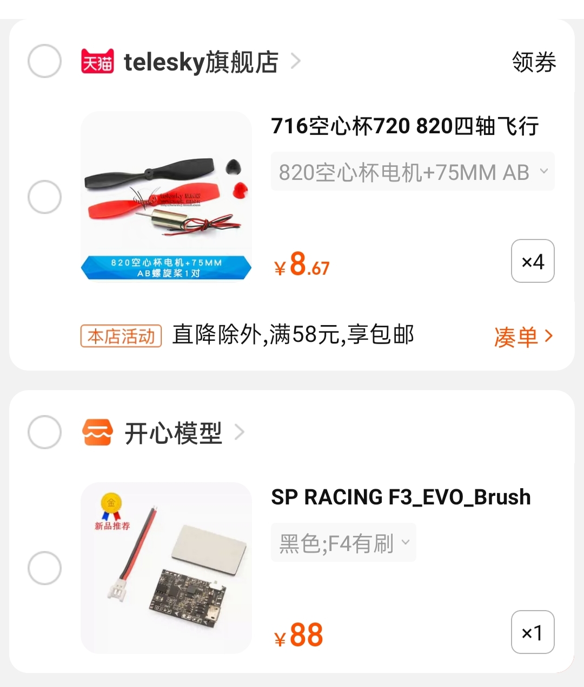
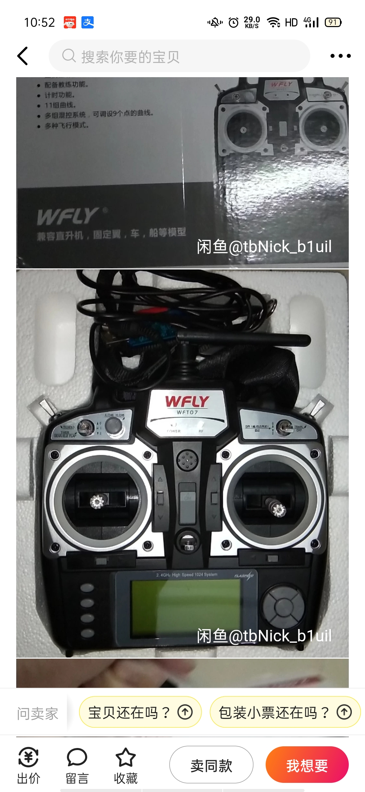

固定翼无人机
- 螺旋桨式无人机
- 喷气式无人机
- 飞行原理:在高速前进过程中，通过机翼上下气流和气压的不同，产生升力，保持无人机的飞行。
旋翼无人机
- 飞行原理:用一个或多个螺旋桨的高速转动产生升力，多螺旋桨还要通过多个螺旋桨的配合保持平衡，并控制无人机6个自由度方向的运动
四旋翼飞行器的主要优点:
- 拥有简单的机械结构
- 拥有稳定的飞行姿态
- 体积可以做小，可实现自主飞行器的小型化和微型化
- 4个电机，具有更大的载重力
四翼飞行器技术关键
总体设计优化:
选择合适的机架材料，减轻飞行器质量。综合考虑质量、尺寸、飞行速度和能耗。确保实现整体设计最优化能源动力系统:
选择合适的电机和减速比，在兼顾最大效率和最大输出功率两项指标的前提下，将电机工作点配置在推荐运行区域内。建立数学模型:
准确建立其在各种飞行状态下的数学模型。飞行控制:
研制既能精确控制飞行器姿态，又具有较强抗干扰和环境自适应能力的姿态控制器是四旋翼飞行器研究的关键。定位、导航与通信:
研制体积小、质量轻、功耗低、稳定可靠和抗干扰的通信链对微小型四旋翼飞行器技术
基本原理:
四旋翼飞行器通常有两种模式，即“十”字形模式与X形模式。
相邻的两个旋翼的转动方向相反，而在对角线上的两个电机的转动方向相同。
升降运动
俯仰运动
横滚运动
偏航运动
四旋翼飞行器姿态表示
平衡控制算法
滤波算法
材料如下：
四个有刷电机和螺旋桨（30以内）+机架（待定）+飞控板（f3 evo brush 100以内）+接收机及其遥控器（二手天地飞7+接收机 300以内）+电池（鹰氪coddar 50以内）+电烙铁 总价600+大概


参考链接1：ymengo-blog
参考链接2：穿越机组装视频-可参考